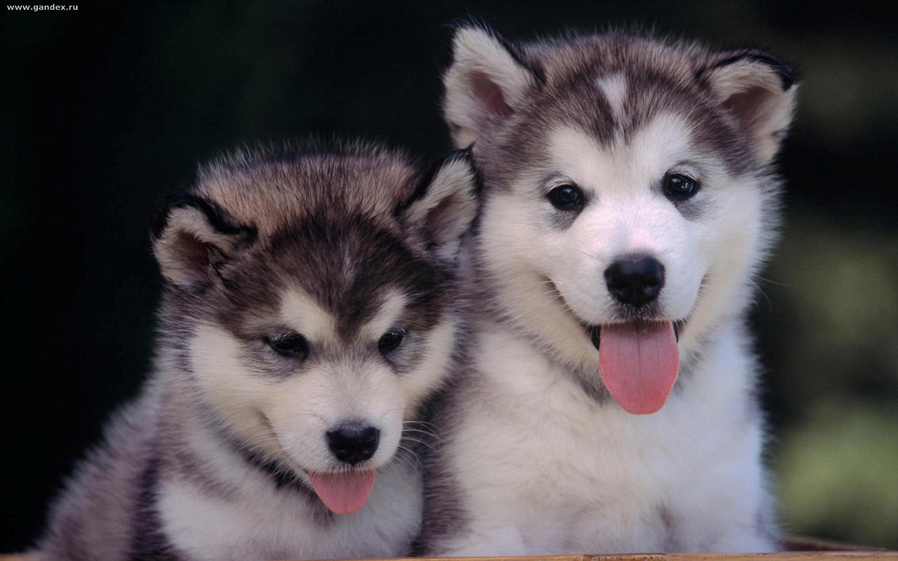

Напевно, якщо собаки почнуть говорити, то нам з ними стане також складно, як з людьми. Карел Чапек
Природа — це група тварин, що мають спільне походження й спільні риси, які передаються спадково. Зараз ми кажемо «стародавня порода», а люди впродовж багатьох століть вели відбір, не замислюючись над тим, що вони виводять якусь породу собак або ж інших тварин. Відбір був твердий, а часто жорстокий. Непотрібних убивали. А якщо був потрібен новий чотириногий працівник, залишали цуценят лише від працьовитих батьків — аби й цуценя теж виросло трудящим. Як визначити, чи буде воно таким, по маленькому цуценяті?
Найпростіше вибрати схожого на батьків-трудівників. Як визначити схожість? Найлегше зробити це за типом, за кольором шерсті. І якщо місцевість, де використовують цих собак, невелика, то формується порода, однорідна не тільки за робочими характеристиками,
а й за типом, забарвленням шерсті та іншими зовнішніми ознаками.Детальніше
Класифікація порід собак
Спеціальний курс дресирування.Рік заснування
Спеціальне дресирування спрямоване на вироблення в собаки навичок, потрібних для використання її в певних видах служби: захисно-караульній, сторожовій, розшуковій тощо.
Згідно з офіційним сайтом Книги рекордів Гіннеса титул найменшої собаки у світі вже котрий рік поспіль підтверджує крихітний чивава на прізвисько Бу-Бу (англ. Boo-Boo). Цей рекордсмен, на зріст 10,16 см і вагою 675 гр